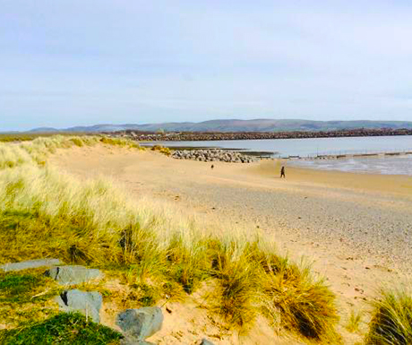

The Best Beaches in the Lake District

Little beknown to many, but the Lake District is home to many fine beaches.
This article was written for Lakelovers, posted on A Luxury Travel Blog and takes a look at the best beaches located in the planets latest world heritage site - the Lake District.
Photography, Image Sourcing and Editing
Fantastic images, whether they be state-of-the-art high resolution photographs or just well composed snaps are paramount when it comes to producing first class digital content.
You eat with your eyes and images, accompanied by written content, help us to formulate opinions and gesticulate our thoughts regarding the flavours we experience.
This post prompted some excellent engagement and also serves as a testament to the diversity that the Lake District has to offer in terms of its landscape - defined by the use of images.
See and read all about it here.
Phiz Digital Photography
For high quality photography that will really make your website, blog or social media channels stand out from the crowd, contact us.
Love Phiz Digital x